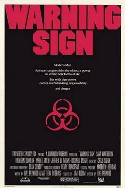

The genetics
The threat is a lab-made pathogen. A secret military programme hidden behind a pesticide company has developed a virulent bacterium as a biological weapon, one that drives its victims to homicidal madness, and its accidental release turns the laboratory into a death trap. The head of the laboratory team, Dr. Nielsen, puts secrecy before lives and kills himself when he fails, and the government containment team is ready to sacrifice the workers to cover up the accident. Against them, the former employee Dr. Dan Fairchild, an alcoholic but sympathetic scientist, designs a working antidote after the first one fails, using what protects the pregnant Joanie. The film warns about secret bioweapons research and official cover-ups. Its explanation, that pregnancy hormones and antibodies protect against the agent, is not grounded in real immunology, and bacteria do not cause madness in the way shown.
How genetics is portrayed
- Overall portrayal of genetics
- mixed A secret military bioweapon and an indifferent government cause the catastrophe, while a central heroic scientist, who did not make the weapon, uses his knowledge to cure it: good science set against its co-option by the military.
- Outcome of the genetic intervention
- negative The weapon's release turns workers into killers and causes many deaths, and the government abandons those inside, before the new antidote saves the survivors.
- BioTek military laboratory (Dr. Nielsen's team)
- villain Aim: military (negative). The secret lab behind a pesticide front develops a bacterium that drives victims mad; Nielsen puts secrecy before lives, opposes the rescuers and kills himself when he fails.
- Dr. Dan Fairchild
- hero Aim: benevolent (positive). The alcoholic former employee who made the first antidote returns to the sealed building and, from Joanie's blood, designs the new antidote that cures himself and the survivors; the film presents him as a flawed but heroic ally.
The story
BioTek, which presents itself as a pesticide manufacturer, is a secret military laboratory. When a sealed tube breaks, a virulent bacterium developed as a biological weapon escapes, and security officer Joanie Morse seals the building with everyone inside. Her husband, Sheriff Cal Morse, enlists Dr. Dan Fairchild, an alcoholic former employee who developed an antidote, while a government containment team under Major Connelly quarantines the site and tells the public a cover story. Inside, the workers take the antidote, but it fails: the infected turn into homicidal maniacs, kill a rescue team and hunt the others, and the government decides to let everyone inside die. Cal and Fairchild go in to save Joanie, who is unaffected. A blood test shows that her pregnancy protects her, and Fairchild, before succumbing himself, designs a new antidote that works. Joanie releases it through the decontamination system, curing the survivors.